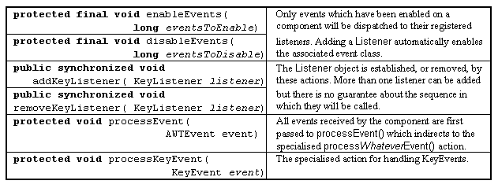

The Component class -
event handling actions

Event enabling occurs automatically when an appropriate listener is registered. When Components are extended, as opposed to being used, events have to be specifically enabled.